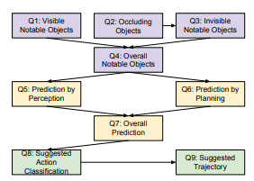

V2V-GoT casts cooperative autonomous driving as a Graph-of-Thoughts (GoT) over nine perception, prediction and planning question nodes (Q1…Q9), with all participating CAVs sharing one centralized LM that fuses their LiDAR features. We build on this baseline along two axes.
OSM map grounding. We recover GPS traces from V2V4Real metadata, align them to the LiDAR BEV frame, and study three strategies for injecting the local OpenStreetMap road graph into the GoT: a learned visual encoder feeding the projector, a rasterized OSM image fed directly into LLaVA's visual context, and a short textual description of the road graph injected as text tokens.
Decentralization. Each CAV runs the entire Q1…Q9 chain on its own LiDAR. Vehicles cooperate only through two compact V2V text messages broadcast between question nodes. Our full decentralized configuration reaches PDMS 0.861 on V2V4Real against 0.876 for centralized fusion, while exposing a clear Q8→Q9 information bottleneck in the original GoT design.
All experiments use V2V4Real, a real-world cooperative-driving benchmark recorded with two connected vehicles equipped with roof-mounted LiDAR. Each sample is a synchronized pair of BEV LiDAR point clouds together with ground-truth annotations for objects, motion, and planning.
The validation split we use contains 1723 frame pairs spread across 9 driving scenarios. Each scenario is a different route with its own road geometry, traffic pattern, and manoeuvre profile. Below is a visual tour, with frame counts per scenario.
We recover GPS traces from V2V4Real metadata, align them to the LiDAR BEV frame, and study three strategies for injecting the local OpenStreetMap road graph into the GoT chain.
Read moreEach CAV runs Q1…Q9 on its own LiDAR. Two compact V2V text messages broadcast between question nodes close most of the gap to centralized fusion.
Read moreCooperative driving promises safer behaviour by letting vehicles see what their neighbours see. Published V2V perception systems — including V2V-GoT — usually assume intermediate feature fusion: each CAV ships compressed BEV LiDAR features to a central node that runs a single jointly-trained model. This is bandwidth-heavy, time-synchronization-sensitive, and ignores every trust boundary between vehicles from different manufacturers or operators. It also ignores a rich, free, vehicle-independent source of priors: the road map itself.
We ask two questions on top of V2V-GoT:
The two questions are complementary: OSM grounding is a per-CAV intervention that survives decentralization unchanged, and we ultimately want both axes in the same system.
V2V-GoT sees the world only through BEV LiDAR. Lanes, road boundaries, intersections and turn topology are implicit in the point cloud and must be re-inferred at every timestep. Maps from OpenStreetMap, by contrast, encode this information directly and come at near-zero per-frame cost. Our hypothesis is that injecting an OSM-derived map prior in the planning prompt should reduce trajectory errors driven by road geometry rather than by missed perception.
V2V4Real does not publish latitude/longitude in a directly consumable format, so we recovered ego positions from the underlying dataset metadata. We then validated spatial correctness by overlaying each frame's LiDAR BEV against the local OSM road graph rendered at the recovered GPS location.
Media/GPS_location_and_Lidar_fusion]Orientation and position match the expected road geometry, which unblocks the rest of the OSM pipeline: Overpass tile fetching, BEV rasterization, and alignment with the LiDAR coordinate frame.
We compare three ways of pushing the OSM road graph into V2V-GoT, chosen to span the compute-vs-expressivity trade-off:
The text-description path is also informative on its own: if it already lifts planning quality without any fine-tuning, the bottleneck is information rather than modality.
Before deploying GPU time to the full OSM pipeline, we built a synthetic-road dataset in which a simple road-mask channel replaces the real OSM raster. This isolates two questions: (i) does the token-injection pipeline plumb through the projector and the LM without numerical collapse, and (ii) does a map-shaped channel carry enough signal to move the planning metrics at all? Both checks passed, which cleared the way for the full OSM integration.
The original V2V-GoT recipe estimates 45 h per fine-tune run on 4× H100 80 GB. Our SCITAS Izar allocation gives us at best 2× V100 32 GB, which do not support FlashAttention-2 or BF16; the extra OSM channel further inflates token count. Effective throughput drops to roughly 200 h per epoch, far beyond the budget needed for three full configurations.
We therefore switched to LoRA fine-tuning of the LLaVA backbone: trainable parameter count and per-step memory both drop by an order of magnitude, and the inductive bias is appropriate — we are not retraining V2V-GoT from scratch, only asking it to absorb a relatively narrow new modality (OSM road geometry).
We compare the three injection strategies against the reproduced V2V-GoT baseline on planning L2, collision rate (CR) and wrong-lane rate. The reproduced baseline matches the published numbers to within $\pm 0.2\%$, giving us a trustworthy reference.
| Configuration | L2 (m) ↓ | CR ↓ | Wrong-lane rate ↓ | Training cost |
|---|---|---|---|---|
| baseline (no OSM) | — | — | — | reference |
| + OSM encoder | — | — | — | — |
| + OSM raw image | — | — | — | — |
| + OSM text graph | — | — | — | — |
V2V-GoT decomposes cooperative driving into nine question nodes, each implemented as a LoRA-tuned LLaVA prompt that takes (i) the asker's BEV LiDAR features as visual tokens and (ii) a text prompt built from outputs of earlier nodes. The chain is:

In the original system, a single LM jointly consumes BEV LiDAR features from both CAVs at every question. The decentralized version we study replaces this with per-CAV inference: each vehicle independently runs the full Q1…Q9 chain on its own LiDAR. Cooperation is restricted to two compact text messages broadcast between question nodes:
Concretely, the chain in Figure B.1 is duplicated — one instance per CAV, running on disjoint inputs — and the two new cross-CAV edges link the two chains at Q3 and Q6.
All experiments use the V2V4Real validation split (9 scenarios, 1723 paired frames). We
evaluate each frame twice — once asking from the perspective of ego
and once from CAV1 — for a total of 3446 samples per
configuration.
| Name | LiDAR fusion | q1msg edge | Q9 plan broadcast | Role |
|---|---|---|---|---|
| central | full cross-CAV | — | — | centralized baseline |
| strip | per-CAV only | ✗ | ✗ | decentralized, no cooperation |
| q1msg | per-CAV only | ✓ | ✓ | full proposed system |
Per question we report the metrics most relevant to that node: Q1–Q4 use binary F1/precision/recall and a location F1 at 4 m; Q5 and Q7 use L2 over predicted motion vectors; Q6 uses classification accuracy; Q8 uses action edit distance; Q9 uses L2, CR and PDMS.
q1msg is the full decentralized system and stays within
0.015 PDMS of central.
| Approach | Q1 F1@4 ↑ | Q3 F1@4 ↑ | Q4 acc ↑ | Q5 L2 ↓ | Q6 acc ↑ | Q7 L2 ↓ | Q8 edit ↓ | Q9 L2 ↓ | Q9 CR ↓ | Q9 PDMS ↑ |
|---|---|---|---|---|---|---|---|---|---|---|
| central | 0.516 | 0.438 | 0.905 | 8.06 | 0.875 | 7.62 | 0.088 | 2.621 | 0.0184 | 0.876 |
| strip | 0.511 | 0.427 | 0.893 | 7.97 | 0.000 | 9.06 | 0.093 | 2.725 | 0.0206 | 0.859 |
| q1msg | 0.511 | 0.346 | 0.893 | 8.14 | 0.873 | 7.65 | 0.088 | 2.723 | 0.0196 | 0.861 |
Q8 metrics are essentially identical across all three configurations — centralized features barely help once Q7 has produced a reasonable motion summary. Yet Q9 numbers shift noticeably between configurations. Since Q9 only consumes Q8 as text input, this sensitivity has to come from the visual tokens (the BEV LiDAR features). Q9 is therefore the place where missing cross-CAV LiDAR hurts most: there is no rich textual context to compensate.
The aggregate PDMS reported above follows the standard NAVSIM-style decomposition, with No-Collision (NC), Time-To-Collision (TTC) and Comfort (C) as multiplicative components:
\[ \mathrm{PDMS} \;\propto\; \mathrm{NC} \cdot \mathrm{TTC} \cdot \mathrm{C} \]
Across the three configurations the spread on NC and TTC is small (a few percent), while comfort moves more visibly with the decentralization: trajectories become jaggier when cross-CAV LiDAR is missing, which both lowers comfort directly and nudges the path into nominal-collision regions, inflating CR.
We extended V2V-GoT along two axes. On the OSM side we recovered usable GPS traces from V2V4Real, aligned them to the LiDAR BEV, and laid out three injection strategies (encoder, raw image, text graph) which we compare with LoRA fine-tuning under a tight compute budget. On the decentralization side we showed that the GoT chain can be run per-CAV with only two short text messages, recovering planning quality close to the centralized baseline on V2V4Real (PDMS 0.861 vs. 0.876).
Limitations and honest leaks. All prompts use ego's coordinate frame for both askers; simply switching CAV1 to its own frame at inference time is not a valid experiment because the LM was trained exclusively in ego frame. We treat the Q6 plan broadcast as honest: real V2V protocols already broadcast a vehicle's intended trajectory, and the V2V4Real ground-truth trajectory is the best available proxy for that intent.
Future work.
q1msg; OSM is a per-CAV signal and should compose cleanly.